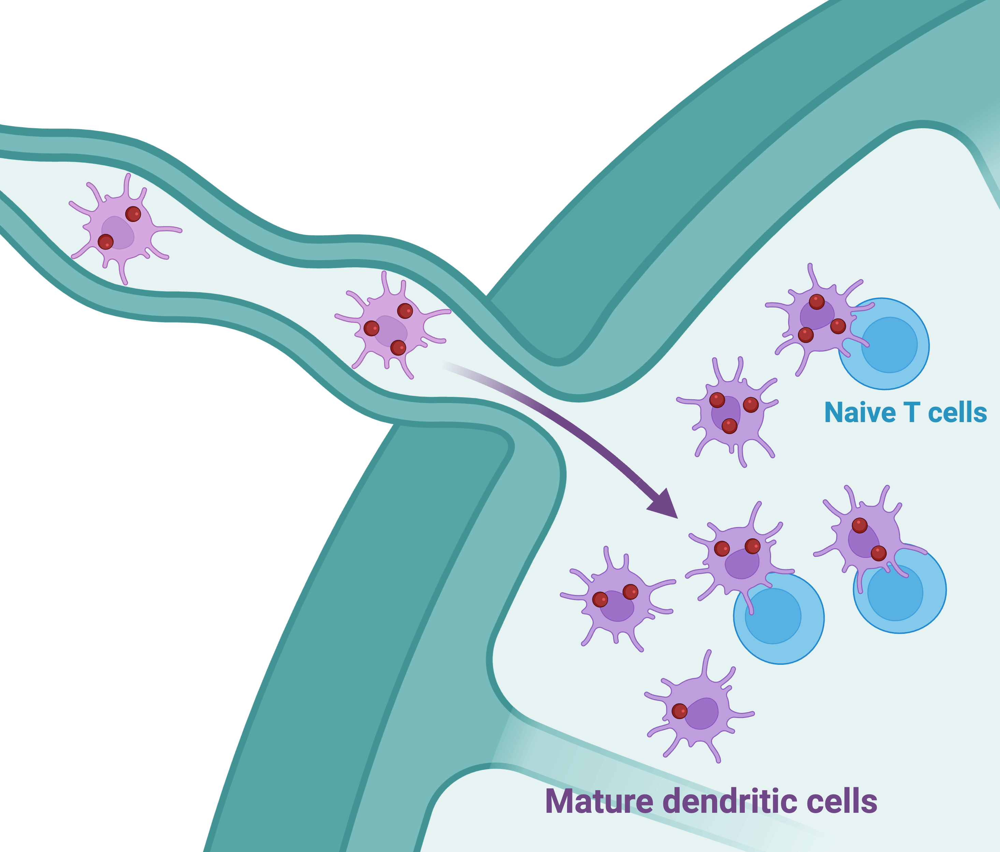
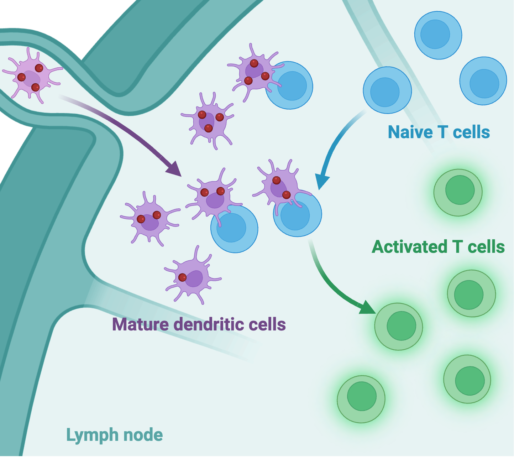

① Peripheral Tissue
Created with BioRender.com
Immature dendritic cells reside in peripheral tissues and continuously sample the environment by engulfing pathogens and their antigens via macropinocytosis and receptor-mediated endocytosis.
② Migration & Maturation

Created with BioRender.com
PRR activation drives migration through lymphatic vessels to regional lymph nodes. During transit the DC matures: phagocytosis ceases; antigen is processed and loaded onto MHC class I and II molecules.
Pattern Recognition Receptor (PRR) activation is the initial step in innate immunity.
③ Lymph Node — T Cell Activation

Created with BioRender.com
Fully mature, non-phagocytic dendritic cells present antigen–MHC complexes alongside co-stimulatory molecules, activating naive T cells and driving lymphocyte proliferation and differentiation into effector cells.
Fig. 1.19 — Dendritic cells initiate adaptive immune responses.
Immature DCs take up pathogens via macropinocytosis and receptor-mediated endocytosis.
PRR activation drives migration through lymphatics to regional lymph nodes, where fully mature,
non-phagocytic DCs present antigen–MHC complexes with co-stimulatory molecules,
activating naive T cells and stimulating lymphocyte proliferation and differentiation.
Source: Murphy K & Weaver C (2016). Janeway's Immunobiology, 9th edn., Chapter 1. Garland Science. | DendriticCells.pdf, Fig. 1.19